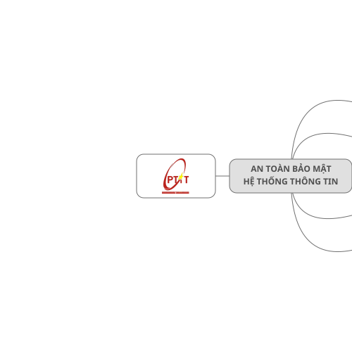

Browsers are difficult
Please wait, loading your map...

AN TOÀN BẢO MẬT HỆ THỐNG THÔNG TIN
1. Tổng quan về An toàn Hệ thống thông tin
2. Các dạng tấn công và phần mềm độc hại
3. Đảm bảo an toàn dựa trên mã hóa
4. Các kỹ thuật, công nghệ đảm bảo an toàn
5. Quản lý, chính sách và pháp luật ATTT
+
+
+
+
2.1 Mối đe dọa, điểm yếu và tấn công
2.2 Công cụ hỗ trợ tấn công
2.3 Các dạng tấn công phá hoại
2.4 Các dạng phần mềm độc hại
Threat - Mối đe dọa
Weakness - Điểm yếu
Vulnerability - Lỗ hổng
Lỗ hổng là bất kỳ điểm yếu nào trong hệ thống cho phép mối đe dọa có thể gây tác hại.
Attack - Tấn công = Mối đe dọa + Lỗ hổng
Mối đe dọa là bất kỳ một hành động nào có thể gây hư hại đến các tài nguyên hệ thống (gồm phần cứng, phần mềm, CSDL, các file, dữ liệu, hoặc hạ tầng mạng vật lý,…).